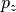
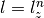
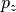
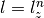
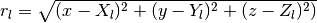

Analytical Integrals with orbkit¶
orbkit is able to perform analytical integrals between atomic and molecular orbitals. This feature enables the user to compute different quantities, like partial charges or dipole moments, analytically.
Hint
The algorithms are adapted from M. Hô and J. M. Hernández-Pérez, “Evaluation of Gaussian Molecular Integrals,” The Mathematica Journal, 2012. dx.doi.org/doi:10.3888/tmj.14-3.
Table of Contents:
Computational Functions¶
The computation of analytical integrals is organized by the module orbkit.analytical_integrals:
from orbkit import analytical_integrals
The atomic orbital overlap matrix can be computed using:
ao_overlap_matrix = analytical_integrals.get_ao_overlap(coord_a,coord_b,
ao_spec,lxlylz_b=None,contraction=True,drv=None,
ao_spherical=None)
where coord_a and coord_b are the coordinates (geo_spec) of the atomic orbital set a and b, respectively. The variables geo_spec, ao_spec and ao_spherical are members of orbkit’s Central Variables.
In order to apply operators to the atomic orbitals, it might be necessary to
change the exponents  of the Ket atomic orbitals. This can
be done by setting the variable lxlylz_b, containing the exponents
explicitly.
of the Ket atomic orbitals. This can
be done by setting the variable lxlylz_b, containing the exponents
explicitly.
The format of lxlylz_b is the same as the exp_list in qc.ao_spec (Central Variables). To get the original list of exponents, use:
from orbkit.core import get_lxlylz
lxlylz_b = get_lxlylz(ao_spec)
The analytical overlap between two molecular orbitals a and b can be computed with:
mo_overlap = analytical_integrals.get_mo_overlap(mo_a,mo_b,ao_overlap_matrix)
where mo_a and mo_b are either entries of qc.mo_spec or vectors of molecular orbital coefficients.
The complete molecular orbital overlap matrix between two sets of molecular orbital coefficients a and b may be computed with:
mo_overlap_matrix = analytical_integrals.get_mo_overlap_matrix(mo_a,mo_b,
ao_overlap_matrix,numproc=1)
with mo_a and mo_b being instances of qc.mo_spec or numpy.ndarrays. The latter can be constructed from an instance of qc.mo_spec (Central Variables) with:
mo_coeff = analytical_integrals.create_mo_coeff(qc.mo_spec)
Computing the Dipole Moment Analytically¶
To obtain the dipole moment, you can call the function:
dm = analytical_integrals.get_dipole_moment(qc,component=['x','y','z'])
which basically calls and combines the electronic with the nuclear dipole moment.
First, it computes the atomic orbital dipole matrix for each components:
ao_dipole_matrix = analytical_integrals.get_ao_dipole_matrix(qc,component='x')
Then, it obtains the molecular orbital dipole moment with:
mo_dm = analytical_integrals.get_mo_overlap(mo_a,mo_b,ao_dipole_matrix)
Finally, it calculates the nuclear dipole moment:
nuc_dm = analytical_integrals.get_nuclear_dipole_moment(qc,component='x')
and combines everything, i.e. for the  -component:
-component:
# Compute the nuclear part
dm = analytical_integrals.get_nuclear_dipole_moment(qc,component='x')
# Substract the electronic part
ao_dipole_matrix = analytical_integrals.get_ao_dipole_matrix(qc,component='x')
for i,mo in enumerate(qc.mo_spec):
dm -= mo['occ_num'] * analytical_integrals.get_mo_overlap(mo,mo,ao_dipole_matrix)
Besides using these high-level functions you can also do everything by hand,
e.g., for computing the  -component of the ao_dipole_matrix between
two primitive  orbitals (or between two orbitals with
), you have to compute:
-component of the ao_dipole_matrix between
two primitive  orbitals (or between two orbitals with
), you have to compute:

with . In python this would look like:
from orbkit.core import get_lxlylz,l_deg
from orbkit.analytical_integrals import get_ao_overlap,get_mo_overlap
component = 2 #: z-component
# Compute the first part of the expectation value:
# Get the the exponents lx, ly, lz for the primitive Cartesian Gaussians of
# the `Ket` basis set, and increase lz by one.
lxlylz_b = get_lxlylz(qc.ao_spec)
lxlylz_b[:,component] += 1
ao_part_1 = get_ao_overlap(qc.geo_spec,qc.geo_spec,qc.ao_spec,
lxlylz_b=lxlylz_b,ao_spherical=qc.ao_spherical)
# Compute the second part of the expectation value:
ao_part_2 = get_ao_overlap(qc.geo_spec,qc.geo_spec,qc.ao_spec,
ao_spherical=qc.ao_spherical)
i = 0
for sel_ao in range(len(qc.ao_spec)):
l = l_deg(l=qc.ao_spec[sel_ao]['type'].lower(),
cartesian_basis=(qc.ao_spherical is None))
for ll in range(l):
ao_part_2[:,i] *= qc.geo_spec[qc.ao_spec[sel_ao]['atom'],component]
i += 1
ao_dipole_matrix = (ao_part_1+ao_part_2)